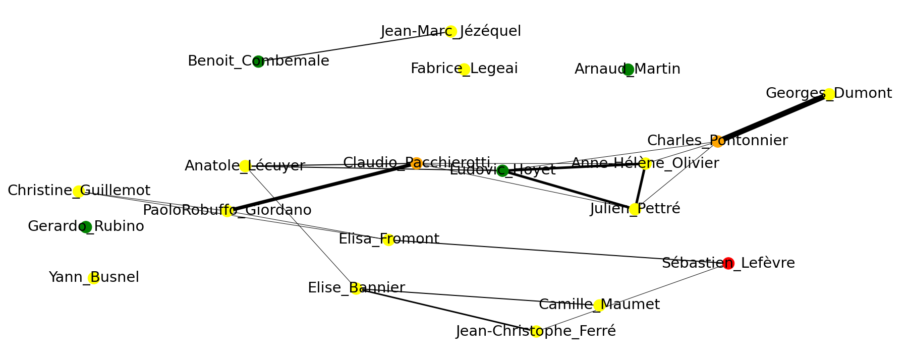

hal_irisa_2021
Réseau de publications scientifiques

On peut observer les liens des 20 auteurs les plus prolifiques de la base. Plus un trait est épais entre 2 auteurs, plus ils ont de publications communes. La couleur de chaque noeud est un indicateur du nombre de publications qu'a publié un auteur. Le code couleur va du vert au rouge. Vert étant la couleur de ceux ayant publiés le moins et rouge ceux ayant publiés le plus.